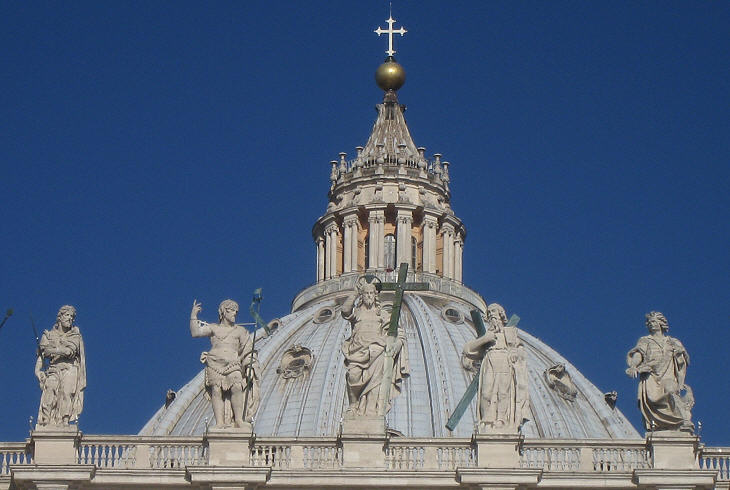
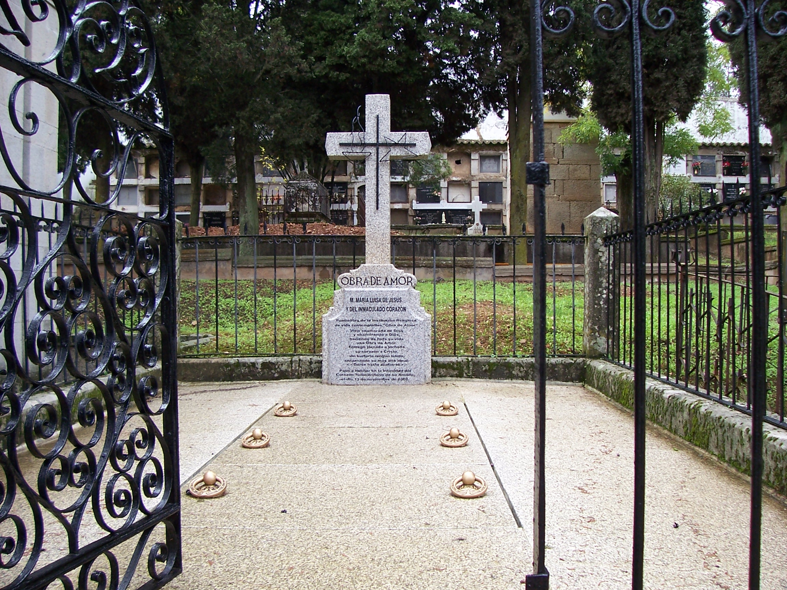

El Rosario 7P
Guía para el Rezo de los Siete Privilegios de la Santísima Virgen María
Descarga el Rosario en formato PDF Simple o Librito para imprimir
Preparación
En el nombre del Padre, y del Hijo y del Espíritu Santo. Amén.
Ofrecimiento: Ofrecemos a la Santísima Virgen María este rosario de amor y alabanza para que cada día sea más conocida y amada y en reparación del desamor y ofensas que recibe de quienes la desprecian y atacan. También pidamos por medio de este rosario a nuestra Madre del cielo las gracias que más necesitamos...
(Guarda unos instantes de silencio para tus intenciones particulares).
Acto de Amor y Consagración
Oh, María Santísima, Estrella que ilumina mi caminar y a quien amo con todo mi corazón; hoy y siempre te consagro mi vida y la pongo en tus manos maternales para que Tú tomes posesión de ella. Me entrego a Ti sin condiciones para que, modelando mi barro, me transformes en una verdadera obra de amor. Haz de mí un instrumento dócil para hacerte conocer y amar por tantos como no te conocen ni te aman, y que mi única recompensa sea ir a gozar de la Santísima Trinidad ese día feliz en que Tú vengas por mí para llevarme al cielo entre tus brazos de Madre. Amén.
1º Privilegio: Inmaculada Concepción
V: Bendita seas, oh Santísima Virgen María, por tu Santa e Inmaculada Concepción,
R: Por la cual fuiste preservada del pecado original y revestida de singular belleza, hermosura y plenitud de gracia.
V: Oh, María, por tu Inmaculada Concepción,
R: Apártanos del pecado y alcánzanos la gracia de perseverar siempre en tu amor. (Repetir 7 veces)
V: Gloria sea por siempre a la Santísima Trinidad,
R: Que adornó tu alma con las piedras preciosas de tus siete privilegios.

2º Privilegio: Virginidad Perpetua
V: Bendita seas, oh Santísima Virgen María, por tu perpetua Virginidad,
R: Por la cual permaneciste virgen antes, durante y después del nacimiento de tu Hijo Jesús, entregando así tu corazón indiviso a Dios.
V: Oh María, por tu perpetua virginidad,
R: Afianza nuestra entrega y alcánzanos una gran pureza de cuerpo y de alma. (Repetir 7 veces)
V: Gloria sea por siempre a la Santísima Trinidad,
R: Que adornó tu alma con las piedras preciosas de tus siete privilegios.

3º Privilegio: Maternidad Divina
V: Bendita seas, oh Santísima Virgen María, por tu Divina Maternidad,
R: Por la cual nos diste al Salvador del mundo, Jesucristo Dios y hombre verdadero, y nos abriste las puertas del Paraíso.
V: Oh María, por tu Maternidad divina,
R: Derrama tu amor maternal sobre tus hijos más necesitados de tu socorro. (Repetir 7 veces)
V: Gloria sea por siempre a la Santísima Trinidad,
R: Que adornó tu alma con las piedras preciosas de tus siete privilegios.

4º Privilegio: Gloriosa Asunción
V: Bendita seas, oh Santísima Virgen María, por tu gloriosa Asunción a los cielos,
R: Por la cual, terminada tu vida terrenal, fuiste llevada a la gloria por los ángeles en cuerpo y alma.
V: Oh, María, por el misterio de tu Asunción,
R: Ayúdanos a elevar nuestra mirada al cielo y a rechazar lo que nos separa de Dios. (Repetir 7 veces)
V: Gloria sea por siempre a la Santísima Trinidad,
R: Que adornó tu alma con las piedras preciosas de tus siete privilegios.

5º Privilegio: Corredención
V: Bendita seas, oh Santísima Virgen María, por el misterio de tu corredención,
R: Por el cual intercediste por la redención de los hombres junto con tu Hijo Jesucristo, Redentor nuestro.
V: Oh, María, por tu privilegio de corredentora,
R: Acompáñanos a la hora de la cruz y fortalécenos en el sufrimiento. (Repetir 7 veces)
V: Gloria sea por siempre a la Santísima Trinidad,
R: Que adornó tu alma con las piedras preciosas de tus siete privilegios.

6º Privilegio: Mediación Materna
V: Bendita seas, oh Santísima Virgen María, por tu prerrogativa de Mediadora de todas las gracias,
R: Por la cual presentas nuestras súplicas al Altísimo para que derrame sobre nosotros los tesoros de sus gracias.
V: Oh María, por tu mediación materna,
R: Vuélvenos tu mirada y atiende misericordiosamente nuestras súplicas. (Repetir 7 veces)
V: Gloria sea por siempre a la Santísima Trinidad,
R: Que adornó tu alma con las piedras preciosas de tus siete privilegios.

7º Privilegio: Realeza Universal
V: Bendita seas, oh Santísima Virgen María, por tu título de Reina de cielos y tierra,
R: Por el cual has sido exaltada sobre todos los coros de los ángeles y sobre todos los santos.
V: Oh, María, por tu Realeza Universal,
R: Continúa desde el cielo manifestando tu amor y alcánzanos las gracias necesarias para nuestra salvación. (Repetir 7 veces)
V: Gloria sea por siempre a la Santísima Trinidad,
R: Que adornó tu alma con las piedras preciosas de tus siete privilegios.

Oración Final
Inmaculada siempre Virgen María, Madre de Dios, que después de aceptar y ofrecer el sacrificio de tu Hijo Jesús para la Redención de los hombres, fuiste llevada al cielo por los ángeles en cuerpo y alma, y como Reina del Universo, derramas sobre tus hijos los tesoros de gracia de la Santa Trinidad, no apartes nunca de nosotros tu mirada misericordiosa y llévanos un día al cielo, donde contemplaremos tu celestial Hermosura por siglos sin fin. Amén.
Jaculatorias Finales
(Repetir 3 veces la siguiente invocación)
V: Honor, alabanza y amor a Santa María
R: En cuya belleza y humildad Dios se ha complacido.
V: Ave María Purísima
R: Sin pecado concebida.
❖ BESAR LA MEDALLA CON DEVOCIÓN ❖